Je m'intéresse à l'optimisation des processus, à la chaîne d'approvisionnement et à l'aéronautique. Voici trois projets qui montrent ce que j'ai fait sur le terrain, en cours et en société technique. Je suis à la recherche d'un stage pour l'été 2027.
Dans le cadre du cours de dessin assisté par ordinateur, nous avons modélisé le stationnement d'un bâtiment commercial situé près du Carrefour Laval, de l'étude du site jusqu'au plan civil final.
Le projet s'est fait en trois planches : une carte de localisation du site, une carte QGIS construite à partir d'un ensemble de données ouvertes (réseau de pistes cyclables et piétonnières), puis le plan civil du stationnement sur AutoCAD, avec les cases, les voies de circulation, les zones gazonnées, les trottoirs et le passage piétons.
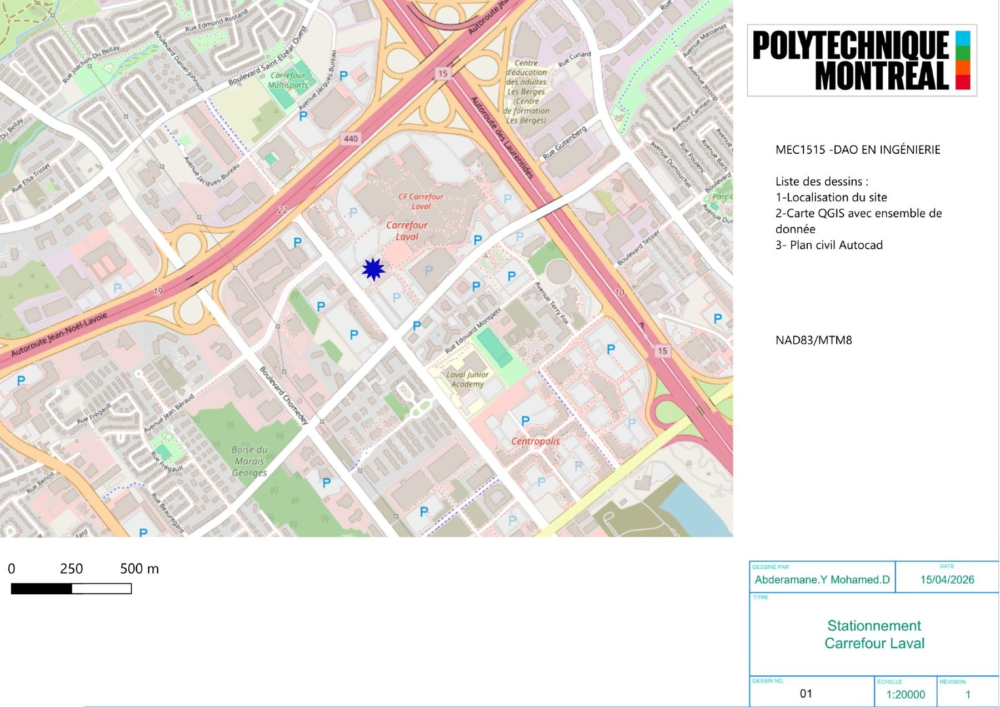
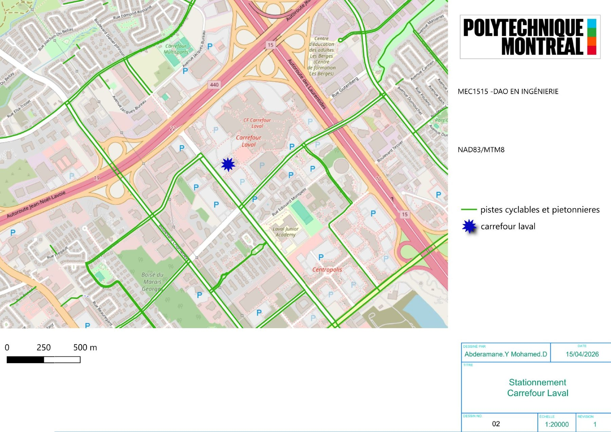
J'ai effectué mon stage à l'AGEROUTE (Agence de gestion des routes) sur le projet des 3 échangeurs d'Abidjan, un chantier d'envergure qui prépare notamment l'arrivée du futur Bus Rapid Transit (BRT) de la ville.
Mon rôle consistait à suivre l'avancement des travaux sur le terrain, à comparer l'avancement avec l'échéancier prévu et à participer aux réunions de chantier avec les différents intervenants.
Photos prises sur le chantier pendant mon stage.
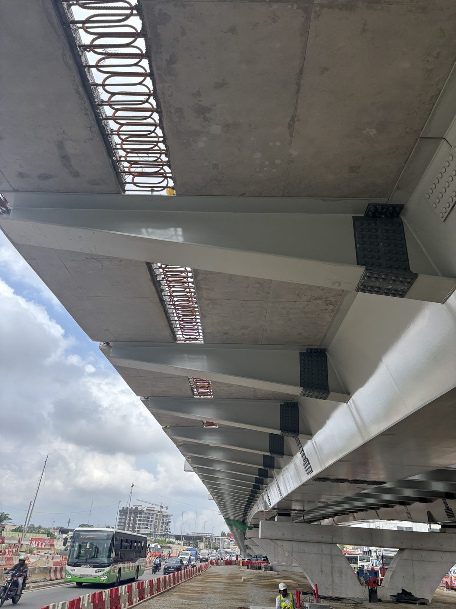
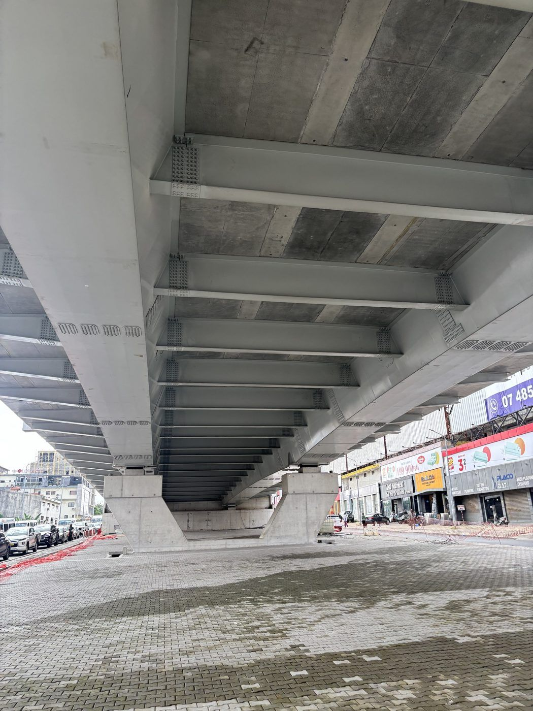
J'ai rédigé un compte rendu sur la mise en œuvre du béton bitumineux semi-grenu (BBSG 0/14, classe 3) sur les contre-allées de l'échangeur de la Palmeraie. Les grandes étapes :
Enrobé produit à chaud en centrale, entre 150 et 170 °C.
Camions-bennes bâchés pour garder l'enrobé à température.
Couche d'accrochage (ECR 65), puis finisseur ; enrobé à 130 °C minimum.
Plusieurs compacteurs, à terminer avant que l'enrobé passe sous 110 °C.
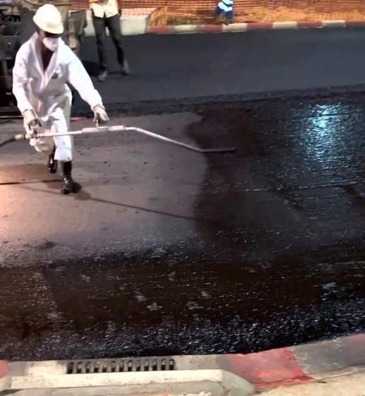
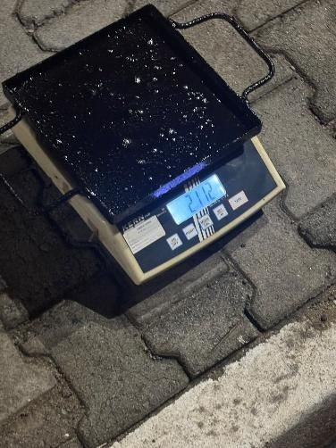
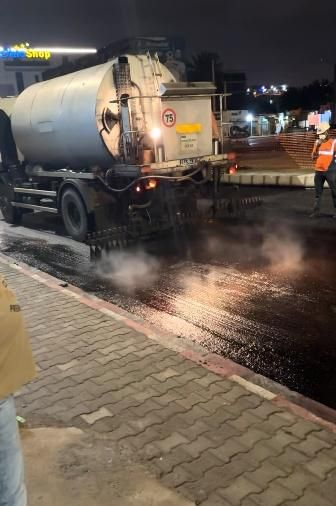
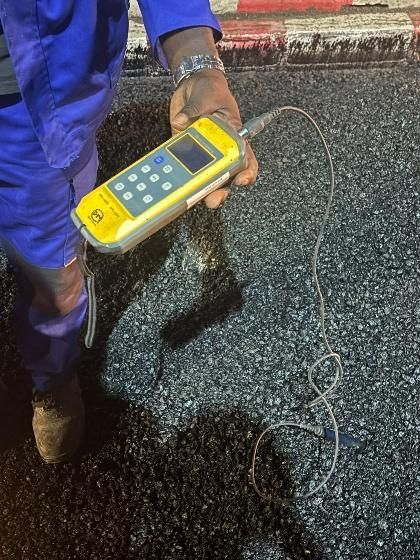
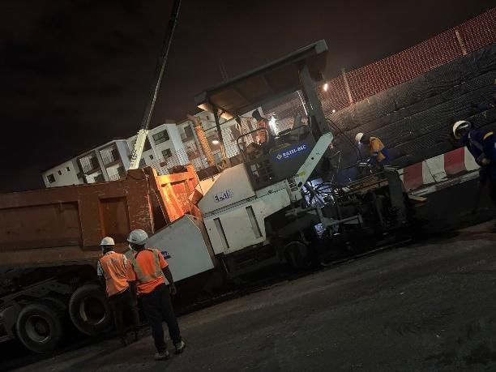
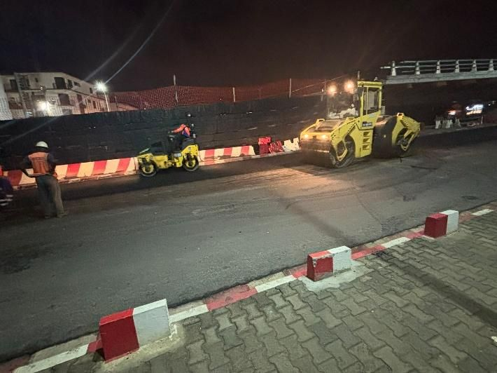
Pour mon intégration à Oronos, la société technique de fusées de Polytechnique, j'ai conçu et construit ma propre mini-fusée, qui a décollé lors de Ciel d'Octobre.
J'ai d'abord modélisé la fusée sur OpenRocket pour valider sa stabilité et sa masse avec le moteur choisi, puis je l'ai assemblée et peinte à l'atelier : ogive, tube corps, coupleur, ailerons et compartiment pour l'altimètre et les batteries.
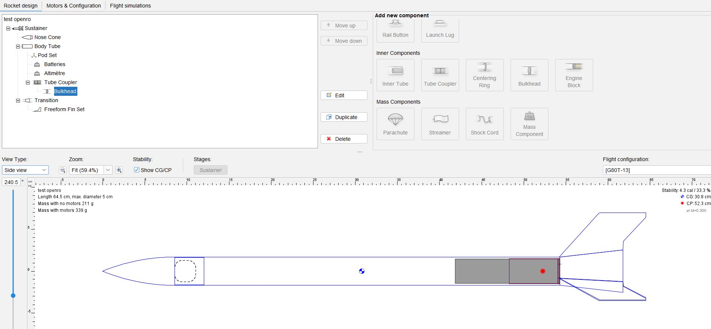
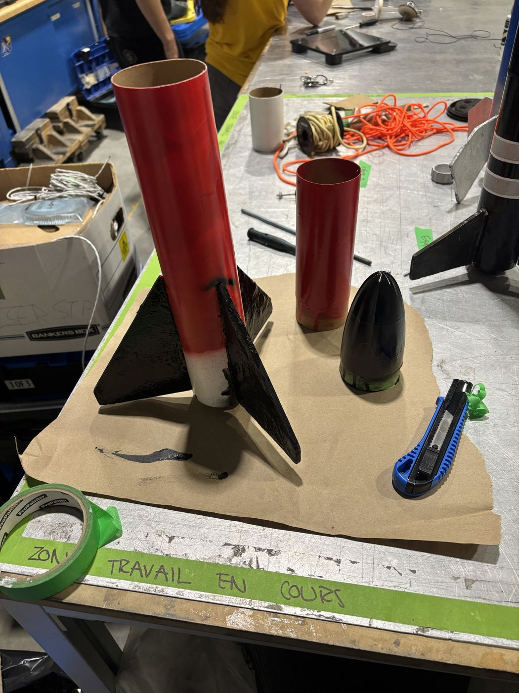
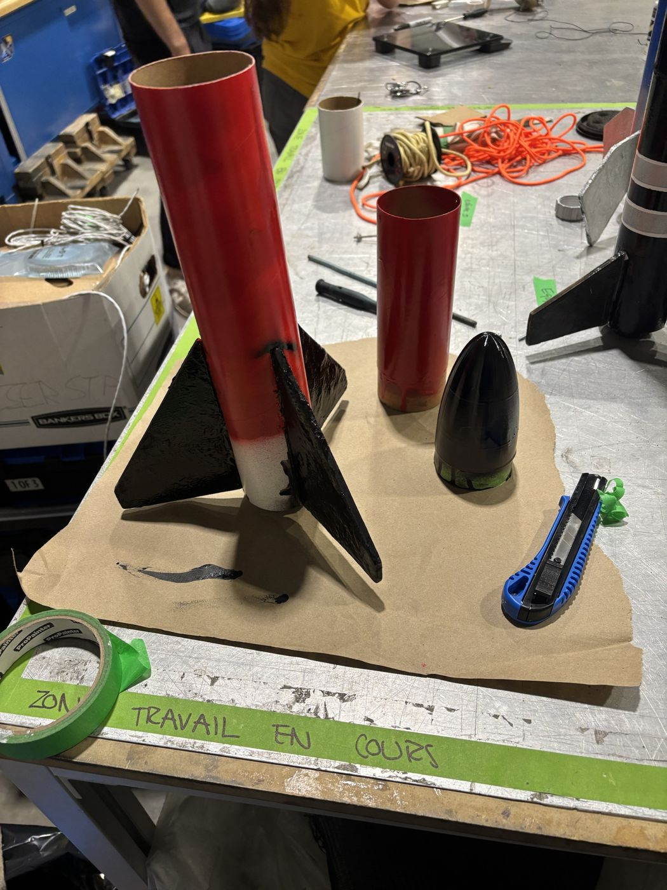
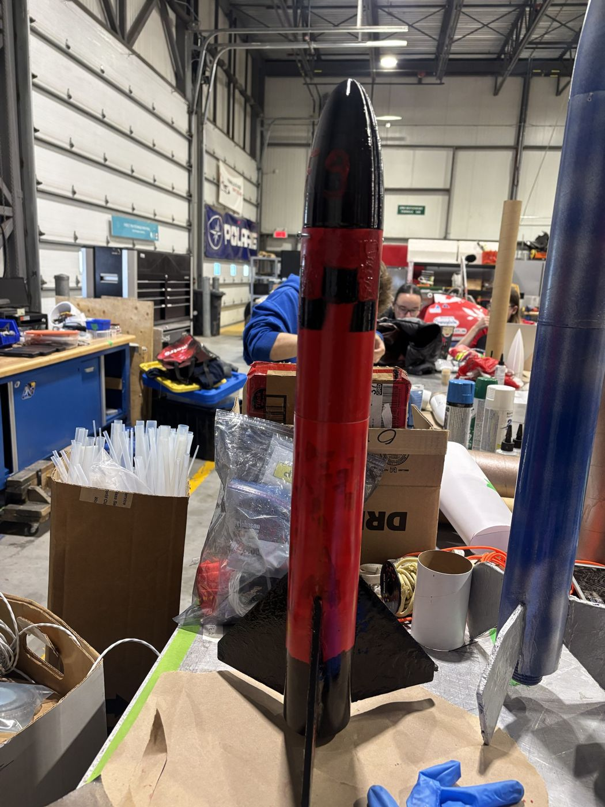
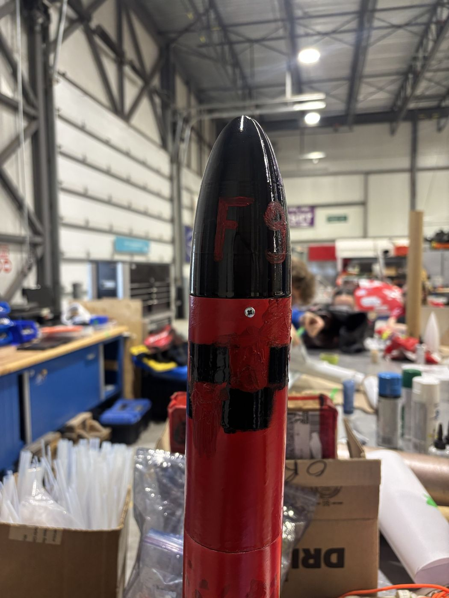